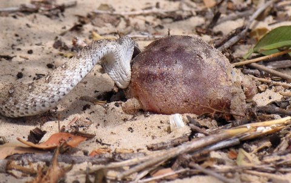
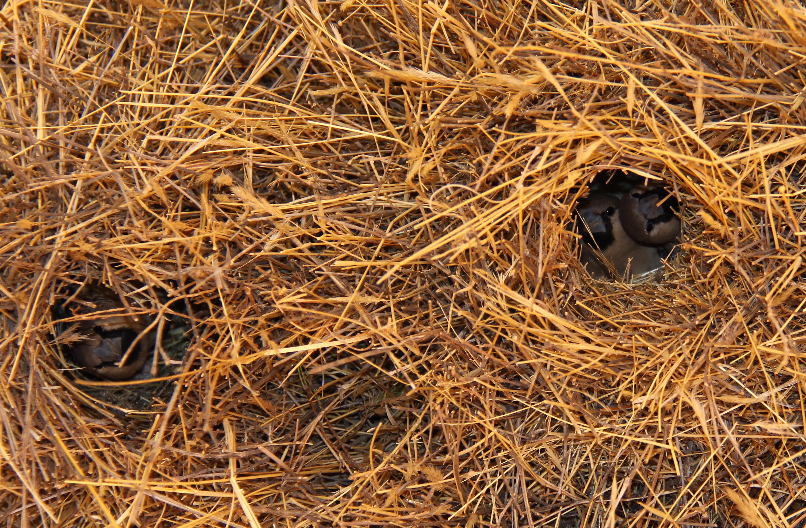
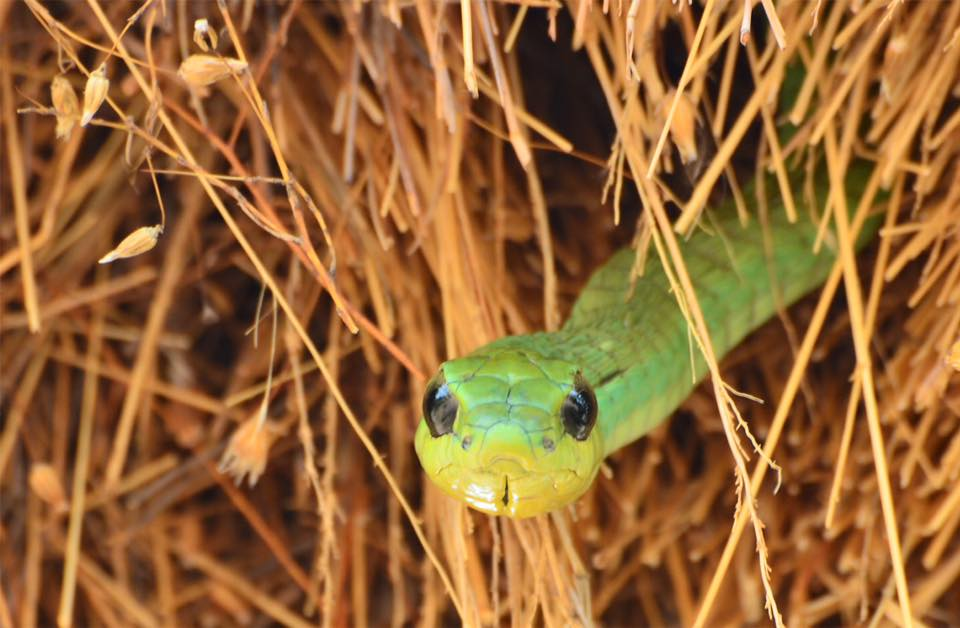

Maritz Lab

Information regarding the diet and feeding ecology of snakes is lacking for most snake species,
especially in Africa where quantitative descriptions of diet are exceedingly rare. Given the importance
of diet and feeding ecology in understanding inter-specific interactions, we use multiple approaches
(including the dissection of museum specimens, citizen science initiatives like the Predation Records
Facebook Group, and field observations) to quantify snake diets. In combination, we aim to better understand
the diversity and abundance of prey consumed by snakes and the ecological implications of those interactions.
Currently, we are engaged in two projects that aim to quantify geographic, ontogenetic, and sexual
variation in the diets of Cape Cobras (Naja nivea) and Boomslang (Dispholidus typus) respectively, in
southern Africa. Although widespread and abundant, neither species is well-known, limiting any inference
of their ecological importance as predators.
The magnitude of the ecological effects a species, or group of species, can have within an ecosystem depends,
in part, on their community structure and respective population sizes. At several field sites, we are using
mark-recapture from surveys of artificial cover objects that will allow us to quantify population sizes,
demographic traits, and vital rates for various snake species within the community. At our primary field site,
over 200 cover objects are surveyed for the occupancy of snakes (and other herpetofauna) every 2-4 weeks.
Although in its infancy, we hope that this data stream will become the largest longitudinal survey of snake
populations in Africa. Currently, we are comparing capture rates from cover objects and more traditional
pitfall/funnel trap arrays to better understand biases associated with using cover objects to sample our
snake community.
In any faunal community, some species are ecologically more similar to each other (in terms of diet,
micro-habitat utilization, and body size) than others. These ecologically similar species form guilds
that characterize..... FINISH THIS. Currently, we are attempting to understand to what degree southern
African snakes form part of such ecological guilds at the local and regional scale. At the local scale,
this involves characterizing such guilds for all tetrapods and assessing how snakes fit into this broader
framework.
Sociable Weavers build large communal nests that are likely to significantly influence the landscapes
and fauna around them. During the breeding season, snakes (mostly Cape cobra (Naja nivea) and Boomslang
(Dispholidus typus) prey heavily on eggs, chicks, and fledglings. This project is part of a collaboration
with Rita Covas (UCT) and Robert Thomas (UCT).
a) Natural history of snake species at weaver colonies
N. nivea and D. typus are frequently found within a colonies and are known to prey upon the
eggs and chicks. However, little is known beyond this about the interaction. In our work at Benfontein
Nature Reserve and Tswalu?? 
we aim to characterize how snakes are utilizing weaver nests as a resource. We
are capturing data to assess: 1) how frequently snakes are accessing colonies, 2) whether there is
competition among snake species for resources, 3) whether visits to nests synchronous with bouts of breeding,
4) how are snakes navigating the nest (i.e. random or directed towards occupied chambers), and 5) if snakes
engage in resource guarding and/or utilize the nest for their own reproduction.
b) Population dynamics of snake abundance and weaver colony growth rate

In the long-term, we
c) Community dynamics at Sociable weaver colonies
Sociable weaver colonies are hubs of ecological activity and their presence on Acacia trees acts as a
resource to several species of arthropods, reptiles, mammals, and other birds. Across field sites, we
are interested in understanding the nature of the ecosystem and the community dynamics that exists within
and around Sociable Weaver colonies.
In parallel, we are characterizing the entire tetrapod community at each field site in order. Ultimately, we seek to
compare the functional performance of snakes to that of other terrestrial vertebrate predators within the ecosystem in
order to ascertain whether snakes add functional redundancy to ecosystem processes or whether they represent unique processes
not performed by other groups.
Species Distribution Models are powerful tools that can help predict the distribution of organisms. Given how
little is known regarding snake community structure, we have two projects that aim to predict the geographic
distributions of snakes within the greater Cape Town area and Kruger National Park respectively. With these
projects we hope to understand patterns of snake community assembly, biotic and abiotic correlates of snake
faunas, as well as patterns of human-snake conflict (a growing concern in southern Africa).
We have several projects that focus on the conservation of southern African snakes, and snakes in general. These projects take various forms, from attempting to understand basic biological information for poorly known threatened taxa. One such species, the Plain Mountain Adder (Bitis inornata) is known from only seven wild individuals and is currently listed as Endangered by the IUCN. We are attempting to better quantify the geographic distribution, phylogenetic affinities, and demographic charateristics of this enigmatic animal with support from the Mohamed bin Zayed Species Conservation Fund. In collaboration with Krystal Tolley at the South African National Biodiversity Institute (SANBI), we are evaluating taxonomic uncertainties associated with the Vulnerable Cape Whip Snake (Psammophis leightoni), to assess whether the current taxonomic assessment and conservation status are appropriate.